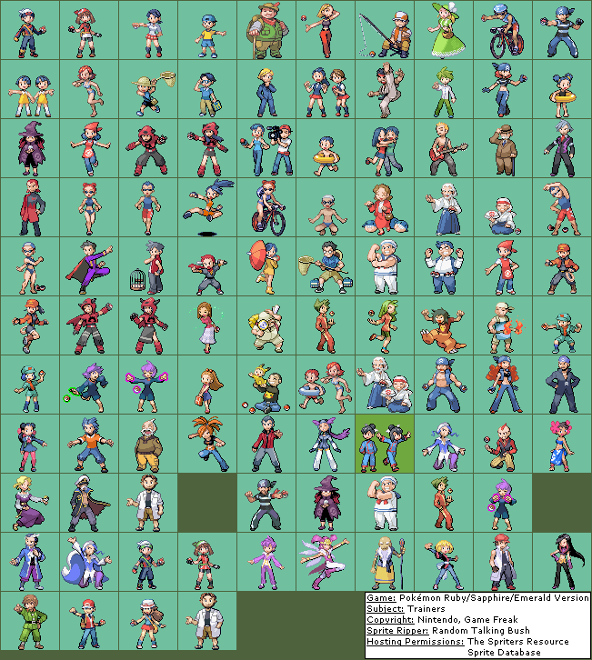

Muestras estáticas para aprobar el estilo antes de cambiar el juego. Ilustración generada, segunda pasada de redibujo pixelado y correcciones sobre una cuadrícula de 96×96. Los originales de alta resolución se conservan como bocetos; no son sprites finales. Ninguna propuesta está integrada todavía.
Referencia aportada por el usuario
Entrenadores de Pokémon Ruby/Sapphire/Emerald. Se comparan proporciones, contornos, poses y agrupación de colores. No se incorporan sus personajes ni sus píxeles a los sprites nuevos.

Referencia de Nintendo / Game Freak, proporcionada por el usuario. Solo comparación artística.
Personaje anterior del proyecto
La prueba nueva debe superar sus masas rectangulares, rostro simplificado y ropa plana. No se ha reutilizado su geometría en los diseños A, B y C.
Qué falta antes de producción
Tu elección del estilo. Después: consistencia entre personajes, poses de combate, animación por frames y revisión dentro del juego. Esta lámina no acredita esas fases posteriores.